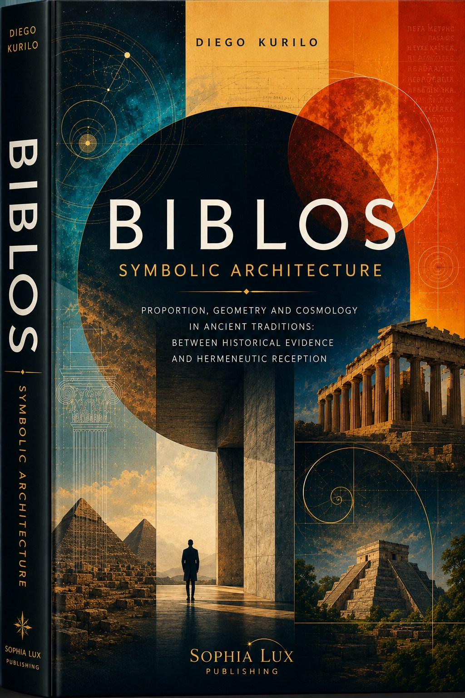
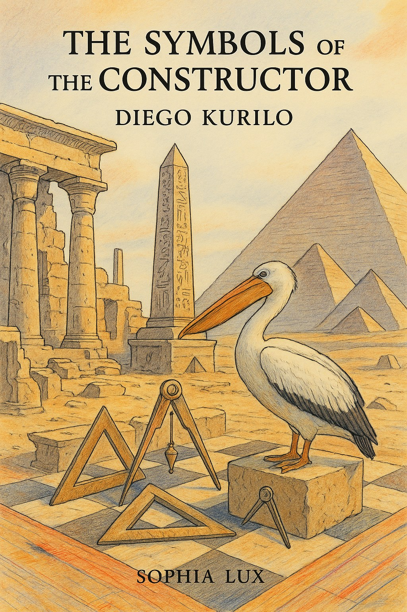
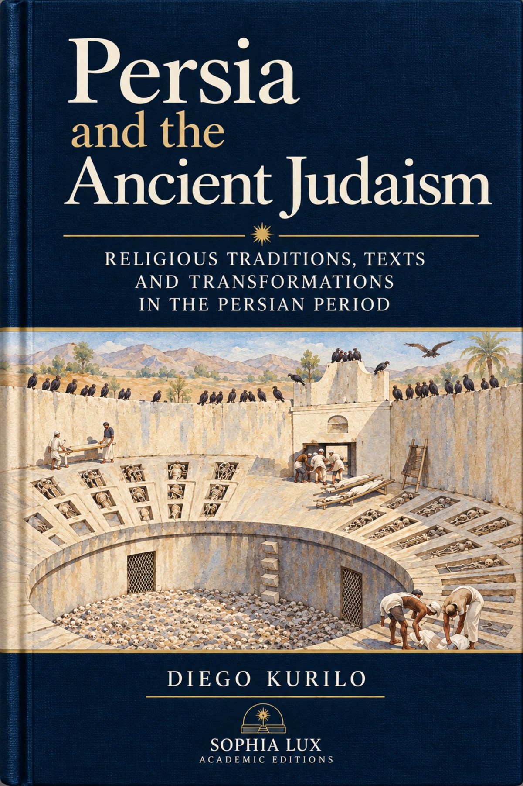

Vitruvian studies
The Architect of Theory
Vitruvius and the intellectual world of Roman antiquity. A study of De architectura, its classical sources and subsequent reception.
Buy on Google PlayIndependent research on Vitruvius, symbolic architecture, ancient cultures and textual traditions. An editorial selection of academic books and studies.

The homepage introduces a small selection. The complete academic catalogue, including Egyptology and the history of religion, appears on the Research page.


Further studies in Egyptology, ancient history and the history of religions appear on the dedicated Research page.